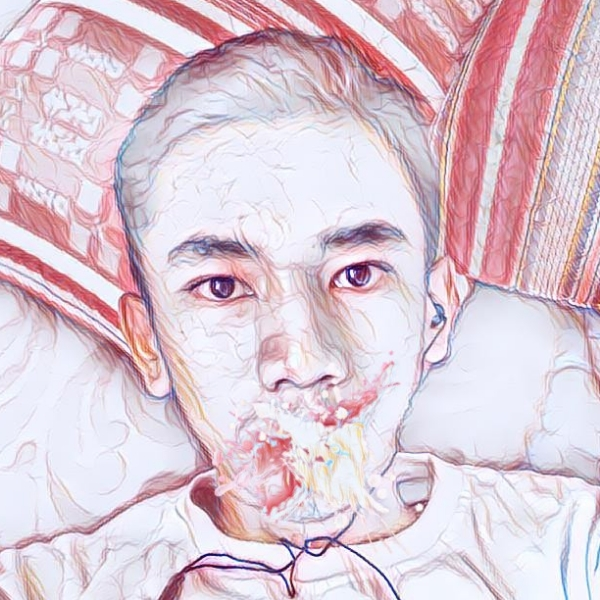

About My Self
Waktu itu saya lahir, kemudian saya beranjak besar. tau tau masuk TK padahal gak minta. Akhirnya masuk SD, 6 tahun terasa cepet banget. banyak temenku punya banyak temen juga, terus masuk ke SMP deh. SMP punya banyak pengalaman ketemu sama orang. tapi pengalaman gak dimiliki banyak orang. aku jadi bingung
Akhirnya kuputuskan untuk naik ke jenjang SMK setelah 3 tahun SMP. di SMK aku belajar selama 4 tahun, sebenarnya baru 2 tahun. jurusan analisis kimia di SMAKBo. di sekolah ini banyak uptown girl, kalau mau kenalan jadi bingung. takut diajak jalan padahal gak ada duit, duh bangke. dah lah disini aja